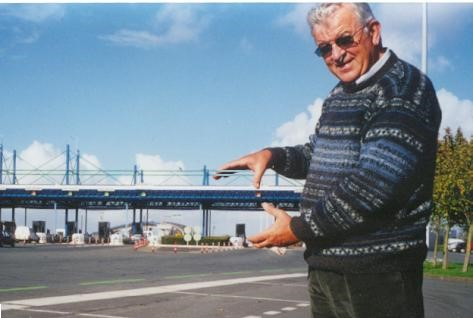

Ce 19 décembre 2003, comme il fait chaud au cœur d’entendre à la radio et à la télévision notre Président Belot du Conseil Général et notre Sénateur Doublet décrire tous les bienfaits qui vont découler de la suppression, ce jour, du Péage de Martrou avec les termes que nous employions dès 1996, alors, que nous étions considérés par ces mêmes personnes, à cette époque d’« irresponsables et d’ineptes ». Même si nous avions raison trop tôt, nous avions raison ! Le péage est supprimé, voilà l’essentiel ! Que les 21 000 signataires de la pétition de 1996 organisée par le comité que je présidais et que tous ceux qui nous ont aussi aidés dans ce combat soient ici remerciés ! Et ayons une pensée particulière pour ceux qui ont été sanctionnés à cause de ce combat.. En 1996, devant la récession que connaissaient Echillais, Soubise et les communes au Sud de la Charente à cause du péage, les consommateurs et les commerçants se sont rebellés et ont manifesté. Quand il a fallu s’organiser, j’étais vice-président de l’ADUA de Paris - dont Jean-Claude DELARUE était le président- était la seule association structurée pour driver les revendications et les actions dont celle de permettre aux usagers de passer sans payer pendant plusieurs heures. Voilà pourquoi, je me suis retrouvé à la tête de ce mouvement, sans résultat pendant 4 ou 5 ans et lors les élections cantonales de 2001, j’ai annoncé ma candidature axée sur la suppression du péage. Pour me neutraliser, le député Quentin, le sénateur Doublet et Belot président du Conseil Général ont décidé de le supprimer à l’échéance de 2003. Je n’ai pas été élu, mais le péage est tombé. Cela a permis le développement de Soubise et les lotissements qui ont poussé. Je n’aurais pas pu réaliser celui que nous avons fait depuis, si j’avais élu. En tout cas, cela m’aurait mis mal à l’aise !

Il y a SOLUTION quand il y a VOLONTE POLITIQUE!